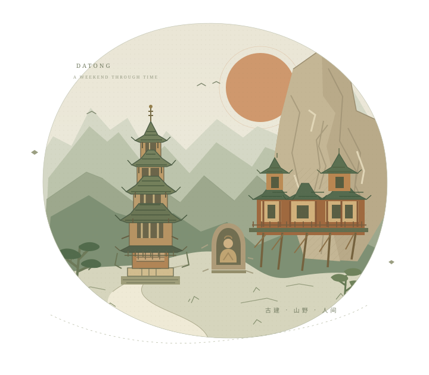

07:00 之前
出发 / ROAD TRIP
北京出发，往大同开
计划走京蔚高速，原攻略估计全程约 350 公里、3.5—4 小时。建议预留休息与拥堵时间，不把最快到达当作保证。
看行车与天气提醒
出发前检查京蔚高速及沿线天气。山区路段坡弯较多，冬季低温、降雪时注意结冰；如遇预警，按实时导航评估京藏 + 宣大等备选路线。
服务区休息、路况与北京具体出发位置都会影响时间。把午餐灵活安排在路上或景区附近。
北京出发 · 晋北自驾手册 VOL. 01
从北京的清晨，开进千年的时光。
石窟里的微笑，悬崖上的寺院，木塔下的一碗凉粉。
两天一夜，把想看的风景串成一段刚刚好的旅程。

THE ROAD AHEAD
周六直奔云冈，周日先悬空寺、后木塔。
把时间留给风景，路上跟着实时导航走。
路线顺序示意，非实时地图。里程、耗时、进京拥堵与山区天气请以当天导航为准。
48 HOURS IN NORTHERN SHANXI
今天的重心只有一个：给云冈留出完整的下午。晚餐和夜游，随心选。
计划走京蔚高速，原攻略估计全程约 350 公里、3.5—4 小时。建议预留休息与拥堵时间，不把最快到达当作保证。
出发前检查京蔚高速及沿线天气。山区路段坡弯较多，冬季低温、降雪时注意结冰；如遇预警，按实时导航评估京藏 + 宣大等备选路线。
服务区休息、路况与北京具体出发位置都会影响时间。把午餐灵活安排在路上或景区附近。
搜索“云冈石窟东南门 A 区停车场”，按现场指引停车。附近或途中吃一碗刀削面，简餐解决，不把时间花在找餐厅上。
先看第 5、6 双窟，再到昙曜五窟（16—20 窟），最后在第 20 窟露天大佛前停一会儿。把体力和时间都留给窟区。
重点：第 20 窟 · 昙曜五窟 · 第 5、6 窟
具体开放洞窟和参观动线以景区当天安排为准。
石窟到酒店原计划约 30—40 分钟。停好车、放好行李、缓一缓，晚上步行或打车逛古城。
酒店停车位置、免费规则、车位及充电桩可用情况，请提前联系前台确认。
烧麦、晋菜、什锦铜火锅选一样。晚餐后选一个夜游重心，不必全打卡。
坚持原定顺序：悬空寺远观 → 应县木塔。下午早一点上路，给返京留余量。
带齐行李，从酒店出发到浑源原计划约 1.5 小时。导航“恒山游客中心”，按景区当日交通组织停车、换乘。
原攻略停车费参考 15—20 元 / 天、摆渡车往返 20 元 / 人，单程约 15 分钟。私家车能否直达、摆渡是否必乘及停靠点可能调整，出发前确认。
后续时间线包含游览计划；还要为上下摆渡、步行和等车留余量。遇排队应压缩午餐与可选项目。
按这次决定，只在山下远观与拍照。观景平台或石拱桥附近，通常更容易把寺院与整片悬崖放进同一张照片。
1 小时游览，拍完就准备离开。
返回停车场还需步行及候车；请把换乘时间算入离开时间。
远观可达区域、是否另需景区入园票及当日开放情况，提前查官方信息；“不登临”不等于所有区域均免票。
返回停车场取车后，前往应县木塔，原计划车程约 1 小时。如摆渡和停车耽搁，午餐与木塔时间相应后移，尽量保住 14:00 前出发。
在木塔附近吃点应县小吃。原攻略推荐二女荞麦凉粉的凉粉、滴溜，再配一份现炸黄米油糕；选眼前顺路的一家就好。
先在广场正面拍全景，再沿允许的参观路线绕塔看斗拱与历代牌匾，最后参观开放的一层，看看释迦牟尼大佛和藻井。
原攻略距木塔步行约 10 分钟，门票参考 15 元，亮点是金代天宫楼阁藻井。时间紧就略过，不以赶车为代价加点。
原攻略约 360 公里、4.5—5 小时；实际终点、进京检查与周日车流都会影响到达时间。可参考荣乌等路线，由当天导航选择。
出发前查看高速施工、天气和限行。山区遇雪放慢车速，途中正常休息，不用赶路换早到。
TASTE THE CITY
挑顺路的，不用全打卡。
饭点排队长，就换下一家。
老柴 / 二板 / 东方削面
周六途中或景区附近，快速吃一碗。
龙聚祥（鼓楼店） / 凤临阁
古城的经典一口，适合周六晚餐。
紫泥 369（鼓楼店）或本地菜馆
晋菜、什锦铜火锅，给冷夜添点暖。
二女荞麦凉粉 / 木塔周边小店
周日午餐，凉粉、滴溜搭配现炸油糕。
YOUR BASE FOR THE NIGHT
周六逛完云冈再入住。晚上步行或打车去古城，出发前向前台核对距离、停车入口与充电设施。
BEFORE YOU GO
出发前逐项确认。
勾选记录只保存在当前浏览器。
A FEW THINGS TO REMEMBER
提前确认预约，直接去景区。以 16:30 截止入园作计划，同时以官方实际公告为准。
悬空寺不安排登临，游览约 1 小时，额外留出摆渡与取车时间。随后去应县木塔。
争取 14:00 前从应县出发。天气和路况不理想时，安全行车与正常休息优先。
本页根据你提供的两天一夜行程整理，未绑定具体出行日期。原攻略中的票价、开放时间、免费讲解、演出场次、酒店停车、充电桩、行车里程和时长均为参考，未作为实时信息独立核验。
云冈的预约与现场售票方式、悬空寺停车及摆渡政策、木塔开放楼层、城墙夜间登城规则会调整。请在出发前通过景区官方渠道和酒店确认。网页中的“导航”会打开高德地图关键词搜索，请核对门店和入口后再出发。